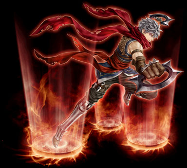

| サイレントトラッパー |
|  |
| トラップスペシャリスト |
|
<情報>
<持続時間>
- トラップスキル使用時2個のトラップが設置される。
- 射程距離15ピクセル増える。
<説明>
- トラップスキル使用時に、一回で二つのトラップを設置する。またトラップ発動感知領域が広くなる。（マウストラップスキルは該当しない） |
<スキルタイプ>
専用パッシブスキル |
<前提スキル>
- なし |
<パワーアップ形態>
- なし |
| ブレードトラップ |
|
<情報>
- スキル難易度 3
- 必要CP 30
- 消費CP [n]
- 敵の攻撃無視
- 射程距離 [n]ピクセルのトラップを設置する。(最大 [8~10]個まで同時に設置出来る
- トラップ設置時間1.00秒
<攻撃関連>
- ◆ 物理ダメージ [n]
- 周期速度 武器速度
<説明>
- 道の要所に足首を引っ掛けて敵の動きを妨げるトラップを設置する。爆発すると範囲内の全ての敵にダメージを与え、麻痺させる。 |
<スキルタイプ>
専用強化スキル |
<前提スキル>
- ブービートラップ Lv50 |
<パワーアップ形態>
- 威力, 設置時間, 設置レベル, 麻痺時間 |
| スキルLv |
1（+0） |
1（+1） |
1（+2） |
1（+3） |
1（+4） |
1（+5） |
| 消費CP |
70 |
71 |
72 |
73 |
74 |
75 |
| 物理ダメージ（％） |
203 |
207 |
211 |
215 |
219 |
223 |
| 効果範囲（m） |
2 |
2.01 |
2.02 |
2.03 |
2.04 |
2.05 |
| 設置時間（秒） [Mini1] |
1 |
| 持続時間（秒） |
410 |
417 |
424 |
431 |
438 |
445 |
| 同時設置可能数 [Max10] |
8 |
8.1 |
8.2 |
8.3 |
8.4 |
8.5 |
| 罠解除Lv |
125 |
128 |
130 |
133 |
135 |
138 |
| 罠探知Lv |
100 |
102 |
104 |
106 |
108 |
110 |
| 射程距離（m） |
2 |
2.01 |
2.02 |
2.03 |
2.04 |
2.05 |
| 麻痺時間（秒） |
55 |
56 |
57 |
58 |
59 |
60 |
| トリプルイクストラップ |
|
<情報>
- スキル難易度 4
- 必要CP 60
- 消費CP [n]
- 敵の攻撃無視
- 段階別ダメージ適用[85％〜125％]
- ターゲットと接近するほどダメージが増幅
- [n]〜[n]の火ダメージを 2回 受ける。
- 射程距離 [n]ピクセルのトラップを設置する。(最大 [6~10]個まで同時に設置出来る
- トラップ設置時間1.00秒
<攻撃関連>
- ◆ 炎ダメージ [n]~[n]
- 周期速度 武器速度
<説明>
- 道の要所に踏むと3回連続で爆発する強力なトラップを設置する。爆発すると範囲内の全ての敵にダメージを与える。 |
<スキルタイプ>
強化スキル |
<前提スキル>
- エクスプロージョントラップ Lv50 |
<パワーアップ形態>
- 威力, 設置時間, 設置レベル, 爆発半径 |
| スキルLv |
1（+0） |
1（+1） |
1（+2） |
1（+3） |
1（+4） |
1（+5） |
| 消費CP |
105 |
106.5 |
108 |
109.5 |
111 |
112.5 |
| 火ダメージ |
545〜575 |
555〜585 |
565〜595 |
575〜605 |
585〜615 |
595〜625 |
| 効果範囲（m） |
2 |
2.01 |
2.02 |
2.03 |
2.04 |
2.05 |
| 攻撃回数 [Max3] |
3 |
| 設置時間（秒） [Mini1] |
1 |
| 持続時間（秒） |
560 |
570 |
580 |
590 |
600 |
610 |
| 同時設置可能数 [Max10] |
6 |
6 |
6 |
6 |
6 |
6 |
| 罠解除Lv |
200 |
204 |
208 |
212 |
216 |
220 |
| 罠探知Lv |
150 |
153 |
156 |
159 |
162 |
165 |
| ベイントラップ |
|
<情報>
- スキル難易度 5
- 必要CP 120
- 消費CP [n]
- 敵の攻撃無視
- 射程距離 [n]ピクセルのトラップを設置する。(最大 [6~10]個まで同時に設置出来る
- トラップ設置時間1.00秒
<付加効果>
- ◆ 毎秒 [n]の大地ダメージ([n]秒)
<説明>
- 踏むと猛毒のガスが広がるトラップを設置。猛毒のガスに被害を受けた敵の大地抵抗力と火抵抗力を減少させる。 |
<スキルタイプ>
強化スキル |
<前提スキル>
- ポイズントラップ Lv50 |
<パワーアップ形態>
- 威力, 設置時間, 設置レベル, 爆発半径 |
| スキルLv |
1（+0） |
1（+1） |
1（+2） |
1（+3） |
1（+4） |
1（+5） |
| 消費CP |
125 |
126 |
127 |
128 |
129 |
130 |
| 毒ダメージ |
110 |
112 |
114 |
116 |
118 |
120 |
| 毒持続時間（秒） |
28 |
28.5 |
29 |
29.5 |
30 |
30.5 |
| 毒ガス持続時間（秒） |
5 |
| 効果範囲（m） |
3 |
3.01 |
3.02 |
3.03 |
3.04 |
3.05 |
| 設置時間（秒） [Mini1] |
1 |
| 持続時間（秒） |
660 |
672 |
684 |
696 |
708 |
720 |
| 同時設置可能数 [Max10] |
6 |
6 |
6 |
6 |
6 |
6 |
| 大地抵抗低下（％） |
50 |
| 火抵抗低下（％） |
50 |
| 罠解除Lv |
250 |
255 |
260 |
265 |
270 |
275 |
| 罠探知Lv |
175 |
179 |
182 |
186 |
189 |
193 |